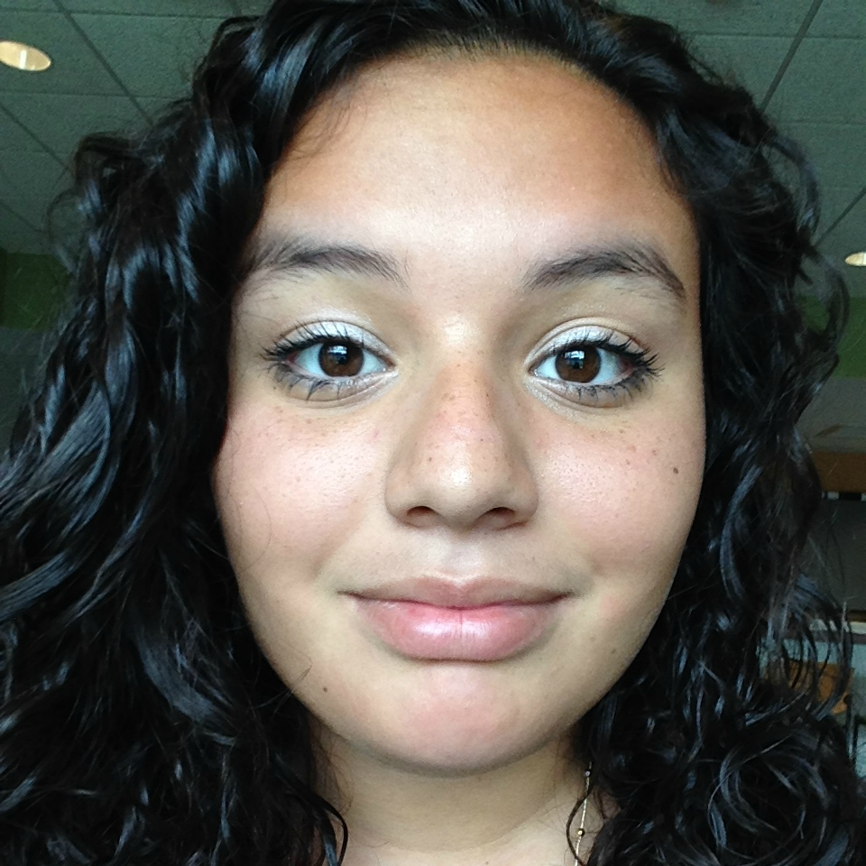
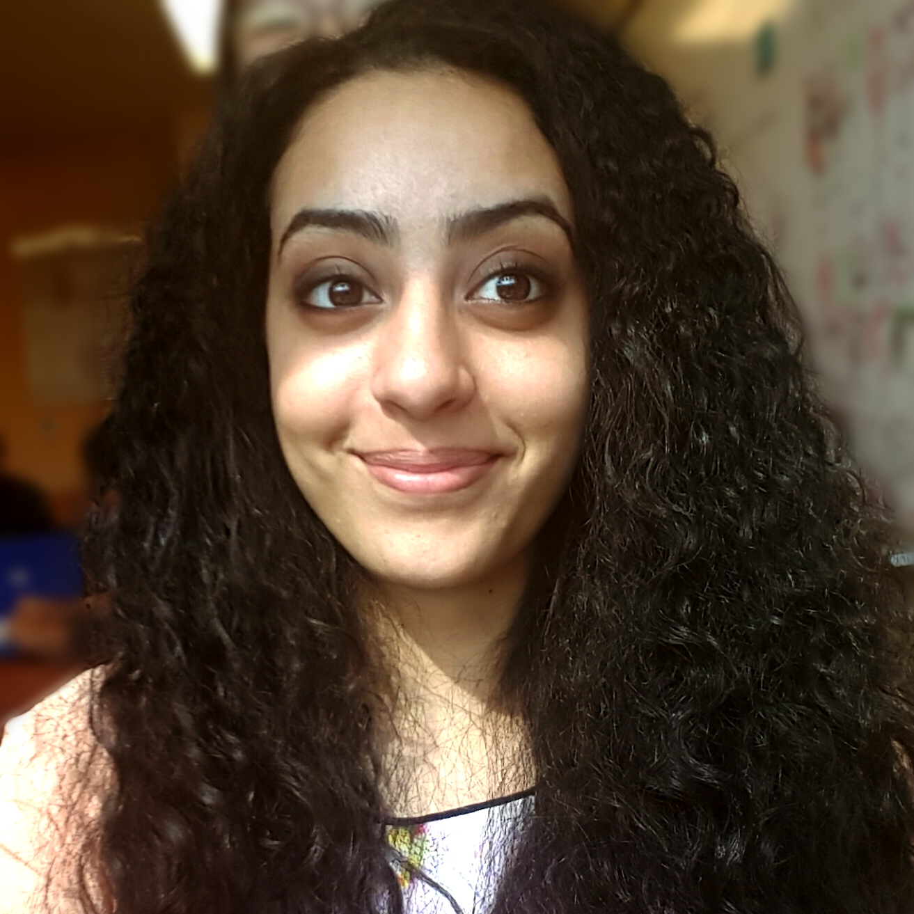

Catarina DeMatos
During her sophomore year, Catarina discovered her love for
STEM by participating in a local robotics team. Through robotics, she was introduced to computer science and wanted
to dig deeper with Girls Who Code. Catarina also has a passion for traveling and photography.
Alexa Mencia

Alexa is very interested in computer science since she believes that she could make a change in the world through coding.
She was introduced to coding in the Girls Who Code program at NJIT.
Alexa is passionate about civil rights, social actions, and gender equality.
Abinaya Sivakumar
Abinaya was first exposed to programming when she wrote her first quadratic formula program
on her calculator for math. She formally learned coding at Girls Who Code Verizon at
NJIT and fell in love with it. Some of Abinaya's other interest include playing the piano and debate.
Chaokun Wangli
 Chaokun's first experience to coding was caused by a fit of boredom in ninth grade that led to an online coding course at Codecademy.
A few years later, she began formally learning code at the Girls Who Code summer program at NJIT, and has never regretted her decision.
Chaokun's other passions include debating in Model UN/Congress and creating artwork.
Chaokun's first experience to coding was caused by a fit of boredom in ninth grade that led to an online coding course at Codecademy.
A few years later, she began formally learning code at the Girls Who Code summer program at NJIT, and has never regretted her decision.
Chaokun's other passions include debating in Model UN/Congress and creating artwork.
Joanna Youssef

Joanna first found herself interested in Computer Science when she was required to take a technology class to fulfill a graduation requirement.
She fell inlove with web design. Following this discovery she applied to Girls Who Code where she learned coding
along with various other vital skills. Joanna is also very into social justice, fashion, and food.